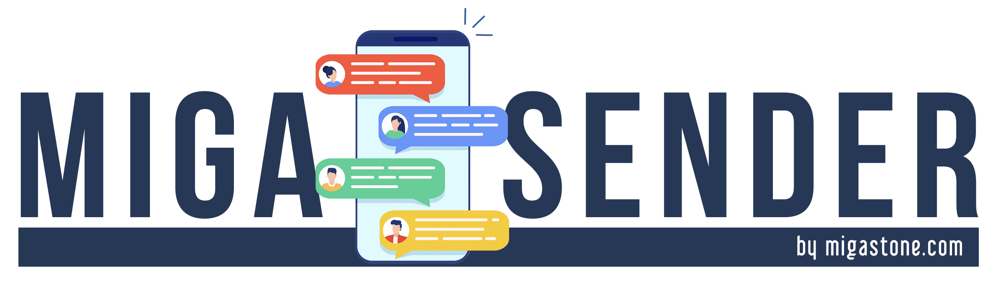

04. Super LAO BOT MAKE AUTOPILOT
Come Automatizzare il Tuo Successo con 32 Potenti Template - Make Autopilot
Video: Come Automatizzare il Tuo Successo con 32 Potenti Template - Make Autopilot - apri su Vimeo

AcademyCome Automatizzare il Tuo Successo con 32 Potenti Template - Make Autopilot